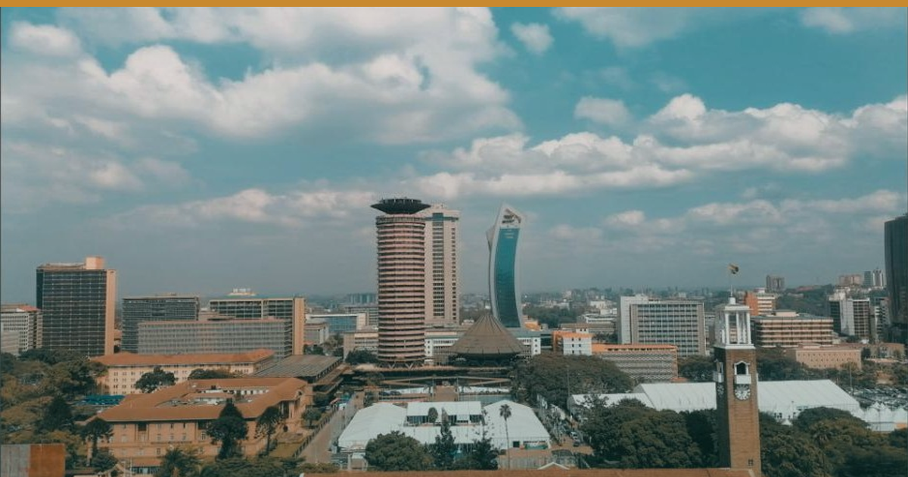

← All editionsNo new developments since this morning — so we went back through the open forecasts, and found one.
No new developments since this morning — so we went back through the open forecasts, and found one.
━━━━━━━━━
1️⃣ THE "JULY 2026" KENYA ADVISORY IS DATED MARCH 2025
We opened the US State Department's Kenya advisory page directly at 13:40 EAT today. The header reads "Travel Advisory — March 17, 2025", and Eastleigh and Kibera sit under Reconsider Travel, not Do Not Travel. Kenya's overall level is unchanged at 2. Several secondary sites are currently describing a "renewed 28 July 2026" advisory placing those neighbourhoods under Do Not Travel. The rendered page does not say that.
🎯 So what: If a corporate client's risk team has flagged Nairobi on the back of a "new" advisory, send them the page itself. Nothing has substantively changed since March 2025.
🏷 City | Kenya | Confirmed (page fetched today) — that the late-July action was feed-level only is our inference
━━━━━━━━━
2️⃣ FORECAST CHECK: OUR LEAD IS NOW FIVE DAYS
On 29 July we logged P038 — that a Kenyan national outlet would report the advisory re-issue by tomorrow. As of today none has. The Citizen Digital piece now ranking for this story was published 18 March 2025 and merely re-touched at 12:54 GMT today, which is why search presents it as current.
🎯 So what: If your comms or risk brief is assembled from search results, assume it can be seventeen months out of date. Check the dateline, not the ranking.
🏷 City, Bush, Beach | Kenya | Confirmed
━━━━━━━━━
3️⃣ STILL TRUE AT MIDDAY
The advisory board has not moved: the US has Kenya 2, Uganda 4, Tanzania 2, Zanzibar 2, Rwanda 3; the UK has Kenya 2, Uganda 3, Tanzania 1, Zanzibar 1, Rwanda 2. Nairobi diesel stays at KSh 222.86/litre until 14 August under EPRA's current schedule.
🎯 So what: No advisory or fuel reason to discount this week. Hold rate into the 15 August review.
🏷 City, Bush, Beach | Kenya, Uganda, Tanzania, Zanzibar, Rwanda | Confirmed
🔗 This edition on the web: https://eahospitalitypulse.com/editions/pulse-2026-08-02-midday.html
— EA Hospitality Pulse | Daily intelligence for city, bush & beach properties
📣 Telegram (full editions) 💬 WhatsApp (daily skim) 💼 LinkedIn (the Big Read) 🗂 Every edition